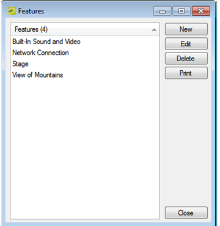

Configuring Features
A feature is built-in or permanent attribute of a room, such as a network connection, a built-in plasma TV, window, and so on. Your users can use features as criteria when they are searching for a room. They can also filter the available rooms that can be reserved for an event by room features. After you configure different room features for your organization, you must indicate which rooms have these features.
- On the menu bar, click Configuration > Facilities > Features. The Features window opens. This window lists all the features that are currently configured in your database.

- Click New. The Feature configuration dialog opens.

- In the Feature field, enter a name or description for the feature (maximum of 50 characters, including spaces).
- If this feature is a video conferencing feature, then select Tied to Resource. See Also: Configure Video Conference Capabilities.
- If you want all Everyday Users to see this feature when they are searching for available space, leave Available to Everyday Users selected.
- Click OK. The Feature configuration dialog closes. You return to the Features window with the newly configured feature automatically selected.